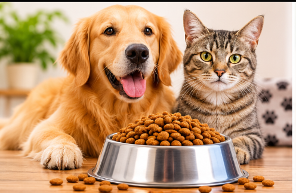

Conheça os tipos de rações
Existem diferentes tipos de rações para cães e gatos. Cada uma possui características específicas e pode atender a diferentes necessidades nutricionais dos animais. Conheça algumas das principais opções.

Ração Seca
É uma das opções mais utilizadas na alimentação de cães e gatos. Possui baixa umidade, é prática para armazenar e ajuda a manter uma rotina alimentar.

Ração Úmida
Possui maior quantidade de água e textura macia. Pode ajudar na hidratação dos animais e costuma ser bastante atrativa para cães e gatos.

Alimentação Natural
É preparada com ingredientes selecionados e deve ser formulada por um profissional para atender às necessidades nutricionais do animal.

Ração Especial
Desenvolvida para animais com necessidades nutricionais específicas. Algumas formulações são utilizadas como parte do cuidado veterinário.
Benefícios de uma boa alimentação
- Ajuda a manter a saúde e a disposição do animal.
- Contribui para uma pelagem saudável.
- Auxilia no desenvolvimento dos músculos e ossos.
- Fornece nutrientes importantes para o organismo.
- Contribui para a qualidade de vida do seu pet.
Dica PetLove
Antes de escolher a alimentação do seu animal, considere sua idade, porte, espécie e condições de saúde. Procure sempre orientação de um médico-veterinário.